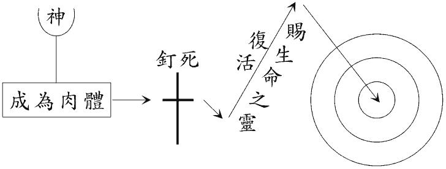
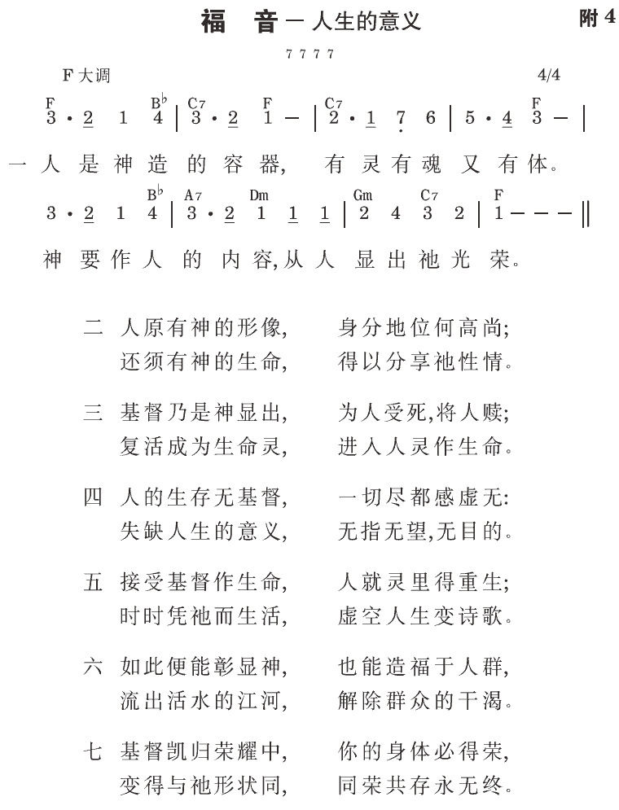

罗9:23 且要在那些蒙怜悯、早预备得荣耀的器皿上，彰显祂荣耀的丰富。
罗10:9 你若口里认耶稣为主，心里信神叫祂从死人中复活，就必得救。
神的计划
神有一个计划，这个计划与人发生极大的关系（弗一5），这个计划圣经称作神的经纶（三9~11）。神的经纶就是神对人全盘的计划。它解释人的来源、终局与生存意义。
人被造是为盛装神
您被造不是为盛装食物在肚腹里，也不是为盛装学问在头脑里，乃是为盛装神在您的灵里（罗九23~24，弗五18）。
罪进入人里面，叫人堕落
罪叫人的灵死亡（二1），叫人的心思背叛（西一21），叫人的身体犯罪（罗六12）。虽然人自古想尽一切方法，要脱离犯罪，但人不能救自己。
基督被钉在十字架上，完成救赎的工作
祂作为神的羔羊而死，除去世人的罪（约一29）；作为铜蛇而死，毁坏古蛇─撒但（三14）；作为一粒麦子而死，释放神圣的生命（十二24）。
神的分赐为使人重生
神“成了”肉体，降生为人，称为耶稣。“话成了肉体，支搭帐幕在我们中间。”（一14）主“成了”那灵，从死复活，成为赐生命的灵。“末后的亚当成了赐生命的灵。”（林前十五45下）这个灵既是“赐生命的灵”，就带着生命，把神分赐到相信祂的人里面。

现在你该作什么？
悔改乃是“心思转变”。
“你们要悔改，因为诸天的国已经临近了。”（太四17）
相信就是接受。
“凡接受祂的，就是信入祂名的人，祂就赐他们权柄，成为神的儿女。”（约一12）
“你若口里认耶稣为主，心里信神叫祂从死人中复活，就必得救。”（罗十9）
受浸是在人面前作见证。所有相信的人都应该受浸，好叫他们不但在神面前得救，也能在人面前得救。借着受浸，神把我们从撒但的国度，迁到神的国度里。
主耶稣说，“我实实在在地告诉你，人若不是从水和灵生的，就不能进神的国。”（约三5）
现在请你祷告：
“主耶稣啊！我是一个罪人，我需要你。求你进到我的灵里，除去我的罪，充满我，叫我得有神的生命。我现在接受你作我的救主和生命。我把自己奉献给你。奉主的名求，阿们！”
参读：《人生的奥秘》。
